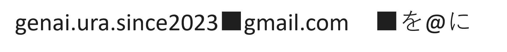

5/20(水) 16:00~ オンライン勉強会のお知らせ
NEW！5/20(水) 16:00～「AI for RA：研究アドミニストレーション業務はどこまでAI化できるか？」と題してオンライン勉強会を開催します。メタサイエンス研究会と共同開催になります。詳細と参加登録は題名からクリックしご覧ください。
「生成AIとURA業務 勉強会」は、大学や研究機関におけるリサーチ・アドミニストレーター（URA）業務に、生成AIをいかに活用できるかを探求するオンライン勉強会コミュニティです。最新のAI技術トレンドを学び、具体的な業務効率化のアイデアや実践事例を共有し合うことを目的としています。研究支援に携わる方に向けた情報を発信します。
NEW！5/20(水) 16:00～「AI for RA：研究アドミニストレーション業務はどこまでAI化できるか？」と題してオンライン勉強会を開催します。メタサイエンス研究会と共同開催になります。詳細と参加登録は題名からクリックしご覧ください。
RA協議会 スキルプログラム専門委員会 テーマ別勉強会支援事業（2026年度）に、本勉強会が採択されました。
2025年時点で研究支援者がどのように生成AIと関わっているのか、調査しております。ぜひご協力ください。
「AI for RA：研究アドミニストレーション業務はどこまでAI化できるか？」をテーマとしたオンライン勉強会を開催しました。メタサイエンス研究会と共同開催です。本勉強会メンバーから3名発表しました。
①テーマ別勉強会支援事業（2026年度）の申請と採択結果、②RA協議会 第12回年次大会 セッション申し込み、③6月開催予定の公開勉強会、④オンライン勉強会（メタサイエンス研究会との共同開催）、について情報交換を行った。6月開催予定の公開勉強会企画書について議論し、今後の各人の動きについて決定した。
①2025年度勉強会活動報告書、②テーマ別勉強会支援事業（2026年度）の申請、③RA協議会 第12回年次大会 会員セッションの申請、④公開勉強会について情報交換を行った。2026年度の勉強会の活動指針について決定した。
私たちの勉強会は、RA協議会 第9回年次大会 教育セッション2「生成系AI とURA 業務」の開催をきっかけに、数名の有志によって発足しました。その後、2024年にRA協議会スキルプログラム専門委員会公認テーマ別勉強会に採択され、2025年5月に同テーマ別勉強会に採択され現在の活動に至ります。

本勉強会に関するご質問・運営の参加希望については、勉強会代表者の渡邉までご連絡ください。

（画像が表示されない場合: genai.ura.since2023 [at] gmail.com ※[at]を@に変換してください）